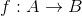
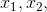
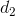
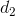
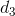

Funcții bijective
Definiția FE22: Funcție bijectivă
O funcție se numește bijectivă dacă este simultan injectivă și surjectivă.
Observație:
Aplicând criteriul grafic, o funcție  este bijectivă, dacă orice paralelă la axa  , de forma
, de forma  cu
cu  , intersectează graficul funcției exact o dată.
, intersectează graficul funcției exact o dată.
Exemple:
Fie funcția Să se studieze bijectivitatea acestei funcții.
Rezolvare:
Conform Definiției FE19 , trebuie să arătăm că funcția  este injectivă, respectiv surjectivă, pentru a arăta că aceasta este bijectivă.
este injectivă, respectiv surjectivă, pentru a arăta că aceasta este bijectivă.
- Injectivitatea
Fie punctele  cu 
Presupunem prin absurd că
În acest caz, ne rezultă că:
ceea ce este în contradicție cu ipoteza
Așadar, din  , ne rezultă că , iar din Definiția FE15, avem că
, ne rezultă că , iar din Definiția FE15, avem că  este o funcție injectivă.
este o funcție injectivă.
- Surjectivitatea
Fie . Căutăm , astfel încât  .
.
Avem:
De aici ne rezultă că funcția  este surjectivă.
este surjectivă.
- bijectivitatea
Cum funcția este injectivă, respectiv surjectivă, confrom Definiției FE19, ne rezultă că funcția este bijectivă.
Observație:
Bijectivitatea unei funcții se poate determina și prin studierea graficului acelei funcții. Cum se interpretează graficul unei funcții, pentru a se vedea dacă este bijectivă sau nu, poți afla, citind cu mare atenție cele ce urmează.
Lecturarea grafică a funcțiilor injective, surjective și bijective
Fie funcția
În cele ce urmează, vom lectura grafic, pentru a vedea în care cazuri, funcția dată este surjectivă, injectivă și bijectivă.
Avem cele 4 grafice de mai jos, în care am considerat dreapta  paralelă cu axa
paralelă cu axa  , care este trasată prin codomeniul al funcției și vom urmări punctele de intersecție ale acestei drepte cu graficul funcției , notat cu , trasat în graficele noastre.
, care este trasată prin codomeniul al funcției și vom urmări punctele de intersecție ale acestei drepte cu graficul funcției , notat cu , trasat în graficele noastre.
Se observă că au fost trasate, pentru fiecare grafic, trei astfel de drepte paralele cu axa .
După fiecare grafic, se face interpretarea (lecturarea) grafică:
- grafic 1
.png)
Observăm că dreptele  și  intersectează graficul funcției în două puncte, iar cea de-a treia dreaptă într-un singur punct.
și  intersectează graficul funcției în două puncte, iar cea de-a treia dreaptă într-un singur punct.
Așadar, dacă am trasa orice dreaptă paralelă cu axa , aceasta va intersecta graficul funcției fie în două puncte, fie într-un singur punct (intersecția dreptei cu graficul funcție nu va fi niciodată mulțimea vidă).
Cu alte cuvinte, dreapta paralelă cu axa dusă prin codomeniu, taie graficul cel puțin printr-un prunct.
Acest tip de funcție, este o funcție surjectivă, deoarece oricărui îi poate corespunde cel puțin un ![x\in\left [ a,b \right ]](../../../media/webbooks/531/4255/images/equations/aqlzy1qsboslmq4tvpirhg==.gif) , astfel încât
, astfel încât
De asemenea se poate observa că dacă proiectăm graficul funcției pe axa  (notat cu verde pe graficul de mai sus), se va obține întregul segment , adică
(notat cu verde pe graficul de mai sus), se va obține întregul segment , adică ![Imf=\left [ c,d \right ]](https://liceunet.ro/media/webbooks/531/4255/images/equations/vtryzsjdcnu-xpgnkaenww==.gif) , de unde avem că funcția este surjectivă.
, de unde avem că funcția este surjectivă.
În plus, observăm că există cel puțin două valori din domeniu, diferite, pentru care  , ceea ce contrazice definiția injectivității, de unde obținem că funcția nu este injectivă.
, ceea ce contrazice definiția injectivității, de unde obținem că funcția nu este injectivă.
Cum funcția este surjectivă, dar nu este injectivă, putem spune că funcția nu este bijectivă.
- grafic 2
.png)
Observăm că dreapta nu intersectează într-un nici un punct, pe când dreptele și  intersectează graficul funcției într-un singur punct.
În acest caz, se observă că există drepte care nu intersectează graficul într-un nici un punct și drepte care intersectează graficul cel mult într-un punct.
Cum nu intersectează în niciun punct, rezultă că nu este o funcție surjectivă.
Dacă proiectăm graficul funcției pe axa (notat cu verde), am obține că , dar nu este egal cu , de unde conform Propoziției FE18: ( Condiție de sujectivitate ), ne rezultă că nu este o funcție surjectivă.
Tot aici, se observă că oricare ar fi o dreaptă paralelă la axa , intersectează în cel mult un punct, ceea ce înseamnă că oricare ar fi ![x_1,x_2\in\left [ a,b \right ], x_1\ne x_2](https://liceunet.ro/media/webbooks/531/4255/images/equations/ju0t1j4e1pg1peuzvwwnjq==.gif) , imaginile lor sunt de asemenea diferite, de unde, conform Definiției FE15, avem că este o funcțe injectivă.
, imaginile lor sunt de asemenea diferite, de unde, conform Definiției FE15, avem că este o funcțe injectivă.
Cum funcția nu este surjectivă, dar este injectivă, putem spune că funcția nu este bijectivă.
- grafic 3

Observăm că dreapta nu intersectează în niciun punct, pe când dreapta intersectează graficul funcției într-un singur punct și intersectează graficul funcției într-un două puncte.
Și în acest caz, asemenea celui anterior, se observă că există drepte care nu intersectează graficul într-un nici un punct și drepte care intersectează graficul într-un punct sau în două puncte.
Cum nu intersectează în niciun punct, rezultă că nu este o funcție surjectivă.
Dacă proiectăm graficul funcției pe axa (reprezentat cu verde), am obține că , dar nu este egal cu , de unde ne rezultă că nu este o funcție surjectivă (confrom Propoziției FE18 ).
De asemenea, se observă că există cel puțin două valori diferite, pentru care , ceea ce contrazice definiția injectivității, de unde obținem că funcția nu este injectivă.
Cum funcția nu este surjectivă și nici injectivă, spunem că funcția nu este bijectivă.
- grafic 4

În acest ultim caz, observăm că toate cele 3 drepte intersectează graficul funcției într-un punct.
Prin proiectarea pe axa (notat cu verde), am obține întregul segment , adică , de unde avem că funcția este surjectivă.
Cu alte cuvinte, este o funcție surjectivă, deoarece oricărui îi poate corespunde cel puțin un , astfel încât
În plus, se observă că oricare ar fi o dreaptă paralelă la axa , intersectează în cel mult un punct, ceea ce înseamnă că oricare ar fi , imaginile lor sunt de asemenea diferite, de unde, conform Definiției FE15, avem că este o funcțe injectivă.
Cum funcția este surjectivă și injectivă, ne rezultă că funcția este bijectivă.
Observații:
După această lecturare grafică, putem concluziona:
- dacă o dreaptă paralelă la cu axa dusă prin codomeniu, „taie” graficul cel puțin printr-un prunct, atunci funcția este surjectivă;
- dacă o dreaptă paralelă la cu axa dusă prin codomeniu, „taie” graficul cel mult printr-un prunct, atunci funcția este injectivă;
- dacă o dreaptă paralelă la cu axa dusă prin codomeniu, „taie” graficul cel puțin și cel mult printr-un prunct, atunci funcția este bijectivă.